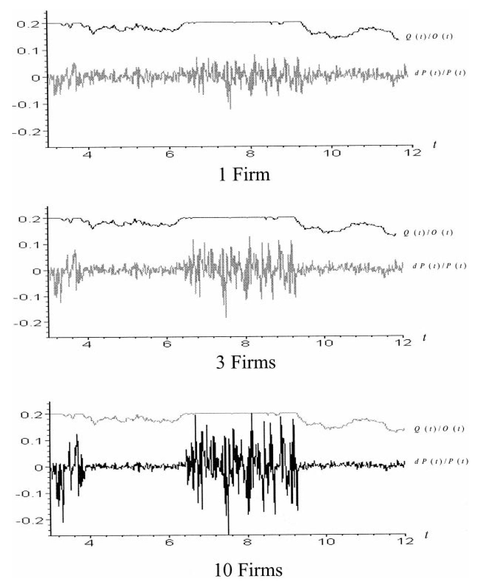
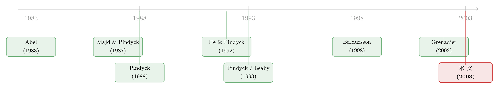

对手越多，价格越疯：把「等待的期权」装进一整个行业的电网里
本文读的是 Aguerrevere (2003, Review of Financial Studies)：在一个同时包含「建设周期 (time to build)」、「运营柔性 (operating flexibility)」与「竞争 (competition)」的实物期权模型里，作者得到了两个反直觉的结论——其一，不确定性上升反而可能让厂商多建产能；其二，行业里的竞争者越多，最终的产出价格越剧烈、波动越大。一个对称、温和的需求冲击，经过产能、柔性与竞争的层层放大，长出了大宗商品价格里那些熟悉的均值回归、尖峰与异方差。
1 引言：为什么电价会「发疯」？
先讲一个谜。
电力是一种几乎无法储存的商品。它的现货价格在大多数日子里平静得近乎乏味，可总有那么几天，价格会毫无预兆地蹿到平日的十倍、几十倍，然后又迅速跌回原位。研究大宗商品的人给这种现象起了名字：尖峰 (spikes) 与异方差 (heteroscedasticity)。Deaton and Laroque (1992) 早就把它们列为商品价格序列的「典型事实」。
通常的解释指向储存：因为存货会被耗尽，供给曲线在低库存时变得陡峭，于是价格暴涨。可电力偏偏几乎不能储存——那它的尖峰又是从哪里来的？
这正是本文的出发点。作者 Aguerrevere 想说：就算完全没有储存，只要把投资决策本身的几个真实特征放进模型，价格的尖峰和异方差会自己冒出来。而且——这是全文最让人意外的一句——行业里的竞争者越多，这些尖峰反而越凶、价格波动反而越大。
我们都习惯了相反的直觉：竞争者多，价格应该被磨平、被稳定才对。本文却给出了一个干净的、基于实物期权的反例。要理解这个反转是怎么来的，得先看清作者往经典模型里加了哪三块「积木」。
2 三块积木：建设周期、运营柔性、竞争
实物期权 (real options) 的核心思想很优雅：一个投资机会，本质上就是一份看涨期权 (call option)——标的资产是项目未来净现金流的现值，行权价是投资支出，行权就是「把钱砸下去」。
实物期权与金融期权的关键差别在于：金融期权通常是专有的，而实物期权常常不是——你的对手也握着同一份「投资期权」，于是行权这件事就染上了博弈与抢先 (preemption) 的色彩。
大多数把竞争装进实物期权的文章，只关心「何时行权去投资」，却忽略了投资完成之后的运营决策。但现实里，能不能根据需求随时增减产量、要不要让某台机组待机，本身就是一份有价值的实物期权。本文的贡献，是把下面三件事同时塞进一个模型：
第一块，建设周期 (time to build)。 一座发电厂从开工到并网要 6 到 10 年；Majd and Pindyck (1987) 说地下矿井或大型石化厂至少要五六年；Pindyck (1991) 给出制药与航空航天的投资滞后是 5 到 10 年。作者用 \(h\ge 0\) 表示这个滞后：\(t\) 时刻买下的一单位产能，要到 \(t+h\) 才能投产。
第二块，运营柔性 (operating flexibility)。 产能建好了，也不一定要全开。需求低迷时可以无成本地关停增量机组，需求回暖时再无成本地重启。这一条听起来像技术假设，却是整篇文章的发动机——它意味着每一单位产能带来的利润永远非负。
第三块，竞争 (competition)。 同一个行业里有 \(n\) 家厂商，每家都在盯着别人的扩产策略来决定自己的。作者会先解一个垄断者的问题，再把它推广到寡头与完全竞争。
接着，一个自然的问题是：把这三块积木拼在一起，厂商的投资决策长什么样？这就要进到模型里去了。
3 模型：从一份「永续美式期权」说起
3.1 设定
厂商生产一种不可储存商品，反需求曲线是线性的：
$$P = Y - \gamma q \tag{1}$$
其中 \(P\) 是产出价格，\(q\) 是产量，\(\gamma\ge 0\) 是需求曲线斜率，而 \(Y\) 是一个外生需求冲击——可以理解成需求一侧的「相对强弱」。\(Y\) 服从几何布朗运动 (geometric Brownian motion)：
$$dY(t) = \mu\,Y(t)\,dt + \sigma\,Y(t)\,dZ(t) \tag{2}$$
\(\mu\) 是单位时间的瞬时漂移，\(\sigma\) 是瞬时波动率，\(Z\) 是标准维纳过程，二者皆为常数。请记住这一点：这个驱动一切的冲击是对称、温和的——它本身没有任何尖峰，也没有异方差。所有「发疯」的价格行为，都要靠模型内生地造出来。
生产技术很简单。每单位运营产能每单位时间产出一单位，成本为
$$C(q) = c_1 q + 0.5\,c_2 q^2 \tag{3}$$
即线性边际成本（\(c_1\) 是截距，\(c_2\) 是斜率）。这条递增的边际成本曲线，恰好对应电力行业「先用便宜的煤电、需求高时才启用昂贵的燃气轮机」的现实。
任意时刻 \(t\)，厂商在不超过当前运营产能 \(O(t)\) 的约束下选产量，使当期利润最大：
$$\pi\big(O(t),Y(t)\big) = \max_{0\le q\le O(t)} \big[(Y(t)-\gamma q)\,q - c_1 q - 0.5\,c_2 q^2\big] \tag{4}$$
投资是不可逆的：承诺产能 (committed capacity) \(K(t)=O(t)+N(t)\)（其中 \(N(t)\) 是在建机组数）这个过程不减。厂商风险中性，按无风险利率 \(r\) 贴现，且需 \(r>\mu\) 以保证公司价值有限。
3.2 全文的「心脏」：一份会蹲下来的边际利润
求解的关键，是 He and Pindyck (1992) 的思路：不去直接解整家公司的价值，而是看增量——多投一单位产能值不值。这一单位产能的投资机会，正是一份永续美式看涨期权：标的是这一单位产能的价值，行权价是建设成本 \(k\)。
那么，一单位（已投产的）边际产能，每单位时间带来多少利润？由 (1)、(3)、(4) 可以推出，当承诺产能为 \(K\) 时：
这一行 (5) 式是全文的心脏。请盯着那个 \(\max\{\cdot,\,0\}\) 看：它正是关停—重启这份运营期权的数学形态。因为有了它，增量产能的利润永远是正的——最坏也不过是关机、领零。这个「永不亏损」的性质，待会儿会把不确定性的作用整个翻转过来。
3.3 三步求解
有了 (5),剩下的推导分三步走，每一步都对应一份期权。
第一步，给一单位「已投产」产能定价。 设当前运营产能为 \(O\)，这一单位的价值 \(\Delta H(O,Y)\) 满足标准的二阶 ODE，解出来是一个分段函数（这正是 Dixit and Pindyck (1994) 第六章的标准结果）：
$$\Delta H(O,Y)=\begin{cases} A(O)\,Y^{\alpha}+\dfrac{Y}{r-\mu}-\dfrac{(2\gamma+c_2)O+c_1}{r}, & Y\ge (2\gamma+c_2)O+c_1\\[2mm] B(O)\,Y^{\beta}, & Y\le (2\gamma+c_2)O+c_1 \end{cases} \tag{6}$$
其中 \(\alpha<0\) 与 \(\beta>0\) 是特征方程的两根：
$$\frac{\sigma^2}{2}\,\xi(\xi-1)+\mu\,\xi-r=0 \tag{7}$$
(6) 式读起来很有意思：当需求高、机组在运行时，\(\dfrac{Y}{r-\mu}-\dfrac{(2\gamma+c_2)O+c_1}{r}\) 是「永远开机」的现值，而 \(A(O)Y^{\alpha}\) 是「将来需求若下跌、可以关机」那份期权的价值；当需求低、机组停摆时，\(B(O)Y^{\beta}\) 则是「将来需求若回升、可以重启」那份期权的价值。两份期权，一关一开，刚好对应运营柔性的两面。
第二步，把建设周期接上去。 一单位在建产能（距投产还剩 \(\theta\le h\)）的价值，是对未来利润流贴现求期望。利用建设滞后的一个巧妙性质——\(t\) 时刻投资不影响 \((t,t+h)\) 区间的利润流，于是 \(O(t+h)=K(t)\)——可以写成
$$\Delta G(K(t),Y(t),\theta)=e^{-r\theta}\,E_t\big[\Delta H(K(t),Y(t+\theta))\big] \tag{10}$$
附录把这个条件期望算成了一个含标准正态分布函数 \(\Phi(\cdot)\) 的闭式解。
第三步，给「投资期权」定价并求行权门槛。 投这一单位的期权 \(\Delta F(K,Y)\) 满足
$$\frac{\sigma^2}{2}\,Y^2\,\Delta F_{YY}+\mu\,Y\,\Delta F_{Y}-r\,\Delta F=0 \tag{13}$$
边界条件包括 \(\Delta F(K,0)=0\)（\(Y=0\) 是吸收壁），以及在门槛 \(Y(K)\) 处的价值匹配 (value-matching) 与平滑粘合 (smooth-pasting) 条件 (14)。解的形式是
$$\Delta F(K,Y)=D(K)\,Y^{\beta},\qquad Y\le Y(K) \tag{15}$$
\(Y(K)\) 就是那个临界需求：一旦 \(Y\) 首次触到它，厂商就行权、再添一单位产能。整家公司的最优产能政策，就由这条门槛规则刻画出来。
4 反转一：不确定性更大，反而多建产能
现在我们可以回收前面埋下的伏笔了。
经典直觉来自 Pindyck (1988)：不确定性越大，不可逆投资越该谨慎——你得留一块「缓冲」，以防需求意外下跌后产能砸在手里。所以在没有建设滞后的模型里，更多不确定性 → 更少产能。
但本文的 (5) 式告诉我们另一面：因为有运营柔性，增量产能的利润永远非负（需求差就关机）。于是真正的风险不再是「需求跌了、产能闲置赔钱」，而是「需求意外暴涨、却没有足够产能去接」——而这块「产能不足的机会成本」，恰恰随不确定性上升。
一句话：运营柔性砍掉了下行风险，只留下上行机会。不确定性越大，极端高需求出现的可能越大，「产能不足」越让人后悔。于是天平倒了过来——更多不确定性可能让厂商多建产能。
把建设周期再叠上去，效果更强：投产要等 \(h\) 年，临到高需求才动工已经来不及，所以厂商更愿意提前囤产能。作者甚至证明，最优产能可能随建设滞后 \(h\) 变长而增加——这就解释了商业地产和电力行业里长期存在的「慢性过剩产能」：建设周期越长，满负荷运转的时间反而越少。
由此还引出本文第二个有意思的观察：厂商可能在当前产能尚未用满时，就动工新建。这听上去荒谬，却正是电力业的常态——因为机组要等好几年才能用上，今天就得为「几年后可能更旺的需求」下注。这一点和 Pindyck (1993) 的结论形成对照：后者认为竞争会压低不可逆投资，而本文发现，加入竞争并不改变上面关于产能选择的结论。
（关于「不可逆投资如何反过来塑造资产价格的波动」，可参见《供给会「变软」的那一刻：不可逆投资如何写出股票的波动节律》；而把竞争与等待装进同一个期权均衡的另一条路径，见《竞争越激烈，反而越要「等」？——把实物期权和竞争装进同一个均衡》。）
5 反转二：竞争者越多，价格越疯
铺垫到这里，全文最戏剧性的一步终于出现。
产能选择的动态，在垄断、寡头、完全竞争下定性上是一样的。可一旦把目光从「产能」移到「价格」，竞争的影响就变得剧烈而不同。
机制是这样的。在任意时点，行业的运营产能要么没用满、要么用满了。没用满时，价格被边际成本拴住，相对温和；可一旦需求把整个行业的产能顶到上限，产量再也加不上去，价格就只能沿着需求曲线 (1) 一路飙升——尖峰就此诞生。而这种「价格行为在『未满负荷』与『满负荷』两个区制间切换」的结构，本身就给价格过程注入了异方差。
关键在于：厂商越多，行业总产能越大、需求触顶时被压抑的产量越多，于是一旦满负荷，价格相对平日的跳升幅度就越大。 作者由此得到那个反直觉的结论——价格尖峰的相对幅度、乃至价格波动率，可能随行业内竞争者数目的增加而上升。

Figure 9: displays the paths of percent change in price, dP(t)/P(t)
如图 9 所示，作者模拟了价格变动率 \(dP(t)/P(t)\) 的路径：当行业里的厂商数目增加时，价格路径上的尖峰变得更频繁、更尖锐，平静期与暴涨期的对比也更鲜明。一个对称、温和的需求冲击 \(Y\)，就这样被「产能 + 柔性 + 竞争」三重机制，加工成了我们在真实电价里看到的那种「大多数日子平静、偶尔发疯」的序列。
这是对储存模型的一个补充：尖峰与异方差未必都来自库存的耗尽，它们也可以从投资与运营的微观结构里内生地长出来——尤其适合解释那些储存昂贵或不可储存的商品（比如电力）。
6 文献脉络
这条研究的主线，是「投资—不确定性关系」这个老问题的一步步精细化。
最早，Abel (1983) 指出不确定性对投资的影响并不必然为负；Caballero (1991) 进一步澄清，这个符号取决于竞争结构与规模报酬等条件。真正把「不可逆 + 增量 + 产能选择」装进连续时间实物期权框架的，是 Pindyck (1988)——他给出了「不确定性压低产能」的经典结论；He and Pindyck (1992) 又把技术/投入选择加了进来。这一支的集大成总结，是 Dixit and Pindyck (1994) 那本教科书。

另一条支线是竞争均衡下的不可逆投资：Leahy (1993) 证明了竞争性厂商「短视」决策的最优性，Pindyck (1993) 则强调竞争对投资的压抑。而最贴近本文的，是 Baldursson (1998) 与 Grenadier (2002)：前者研究寡头以产能为战略变量的均衡，后者发展出可解一般需求设定、并含建设周期的「期权行权博弈」方法。但这两篇都假设产能一旦建成必然满负荷使用——于是它们得到的结论是：价格行为在不同厂商数目下没有差别。
本文恰恰站在这两篇的肩膀上，把它们缺的那块积木——运营柔性——补了回去。正是这块积木，让「满负荷 / 未满负荷」的区制切换成为可能，也让「竞争者越多、价格越疯」这个反转得以出现。这就是本文在这条脉络里的位置。
7 评论与延伸（Q&A + 研究方向）
(a) 几个可能的疑问
Q：所谓「运营柔性」，和普通的『产量随需求调整』有何不同？
普通的产量调整在任何模型里都有；这里的柔性特指无成本的关停与重启——它把增量产能的下行风险整个削平，使边际利润 \(\max\{\cdot,0\}\) 永不为负。正是这个「非负」性质，而非「能调产量」本身，翻转了不确定性对产能的作用方向。
Q：「不确定性增加产能」这个反转，是不是全靠『无成本关停』这条强假设撑着？
方向上确实由它驱动，但作者在脚注里说明，引入关停/重启成本只会让表述复杂，不会改变基本洞见；同样，允许部分可逆、或让产能折旧，也都不改变定性结论。真正不可省的是建设周期与柔性的组合——少了建设滞后，增量产能的收益只取决于当前需求，与不确定性无关，反转就消失了。
Q：「竞争者越多、价格波动越大」会不会只是因为模型里竞争抬高了总产能？
总产能更高是必要的一环，但单凭它还不够——关键是更高的总产能放大了「满负荷」时被压抑的产量，从而放大了价格沿需求曲线跳升的幅度。换句话说，是满负荷区制下的尖峰，而不是平均价格水平，随竞争加剧。平日的价格其实更低、更接近边际成本。
Q：为什么这个模型能在不假设储存的情况下造出尖峰？
因为「供给曲线在产能上限处变得垂直」扮演了储存模型里「库存耗尽」的角色。需求一旦顶到产能上限，供给再也加不上去，价格只能由需求曲线决定而暴涨。这是一种产能约束驱动的尖峰，机制上与储存互补，正好适用于电力这类难以储存的商品。
Q：风险中性这个假设要紧吗？
作者沿用了实物期权文献的标准做法。可以通过调整漂移 \(\mu\) 来吸收风险溢价（如 Cox and Ross (1976)），或假设存在一个与 \(Y\) 完全相关、可连续交易的资产，使市场动态完备、\(Y\) 上的或有索取权可按风险中性测度定价。所以这条假设更多是技术便利，而非结论的命门。
Q：模型预测的「满负荷时才有人新建产能」之外的『慢性过剩产能』，可证伪吗？
模型给出一个可检验的比较静态：满负荷运转的频率应随建设滞后 \(h\) 变长而下降。这在电力、商业地产这类长建设周期行业里有定性证据，但要严格检验，需要跨行业的产能利用率与建设周期数据——这正是后续实证可以做的。
(b) 几个可能的研究问题与提案
1. 竞争与价格波动：电力市场的直接检验
【经济故事】本文最尖锐的预测是「价格波动率随竞争者数目上升」。美国电力放松管制提供了横截面与时间序列上的发电商数目变化（Borenstein and Bushnell (1999)、Wolfram (1999) 已记录过市场势力）。 【可行性】中。需要各区域市场的发电商数目、产能利用率与现货价格序列；识别上的难点是竞争者数目内生于需求增长，需用准自然实验（如并购、入市许可改革）来切。数据可得，identification 是真正的挑战。
2. 把这套「产能—柔性—竞争」机制搬到信用市场
【经济故事】不可储存、产能受限、竞争影响价格波动——这套逻辑能否解释某些公司债二级市场里「平日窄价差、危机时尖峰」的流动性行为？做市商的「承做能力」就像产能，触顶时价差暴涨。 【可行性】中。可借助 TRACE 成交数据与做市商库存指标，类比「满负荷区制」。难点是把「产能」映射到做市商资产负债表约束，并非一一对应；偏理论建模 + 描述性实证更稳妥。
3. 外资进入与本地商品/资产价格的波动结构
【经济故事】把「竞争者数目」换成「市场参与者构成」：外资进入是否像增加厂商一样，改变了某类资产价格的尖峰与异方差结构？本文给出一个「参与者更多 → 波动更大」的反直觉理论锚点。 【可行性】中到低。需要可投资度 (investability) 变化的事件与高频价格数据；机制对应得不算严丝合缝，更适合作为「波动率随参与者结构变化」这一更宽问题的理论引子。
4. 建设周期作为投资—不确定性关系的调节变量
【经济故事】本文的核心比较静态是：建设滞后 \(h\) 越长，不确定性对产能的正向作用越强。可用跨行业的项目建设周期（如发电、采矿、制药）作为 \(h\) 的代理，检验「不确定性 × 建设周期」对资本支出的交互效应。 【可行性】高。Compustat 资本支出 + 行业层面的典型建设周期 + 行业不确定性（如收益波动、政策不确定性指数）即可构造交互项回归；识别上需处理行业固定效应与不确定性的内生性，但框架清晰、doable。
参考文献
- Abel, A. B. (1983). Optimal Investment Under Uncertainty. American Economic Review 73, 228–233.
- Baldursson, F. M. (1998). Irreversible Investment Under Uncertainty in Oligopoly. Journal of Economic Dynamics and Control 22, 627–644.
- Borenstein, S., and J. Bushnell (1999). An Empirical Analysis of the Potential for Market Power in California's Electricity Industry. Journal of Industrial Economics 47, 285–323.
- Caballero, R. J. (1991). On the Sign of the Investment–Uncertainty Relationship. American Economic Review 81, 279–288.
- Cox, J. C., and S. A. Ross (1976). The Valuation of Options for Alternative Stochastic Processes. Journal of Financial Economics 3, 145–166.
- Deaton, A., and G. Laroque (1992). On the Behavior of Commodity Prices. Review of Economic Studies 59, 1–23.
- Dixit, A., and R. S. Pindyck (1994). Investment Under Uncertainty. Princeton University Press, Princeton, NJ.
- Grenadier, S. R. (2002). Option Exercise Games: An Application to the Equilibrium Investment Strategies of Firms. Review of Financial Studies 15, 691–721.
- He, H., and R. Pindyck (1992). Investments in Flexible Production Capacity. Journal of Economic Dynamics and Control 16, 575–599.
- Leahy, J. V. (1993). Investing in Competitive Equilibrium: The Optimality of Myopic Behavior. Quarterly Journal of Economics 108, 1105–1133.
- Majd, S., and R. S. Pindyck (1987). Time to Build, Option Value, and Investment Decisions. Journal of Financial Economics 18, 7–27.
- Pindyck, R. (1988). Irreversible Investment, Capacity Choice, and the Value of the Firm. American Economic Review 79, 969–985.
- Pindyck, R. (1991). Irreversibility, Uncertainty, and Investment. Journal of Economic Literature 29, 1110–1148.
- Pindyck, R. (1993). A Note on Competitive Investment Under Uncertainty. American Economic Review 83, 273–277.
- Wolfram, C. D. (1999). Measuring Duopoly Power in the British Electricity Spot Market. American Economic Review 89, 805–826.